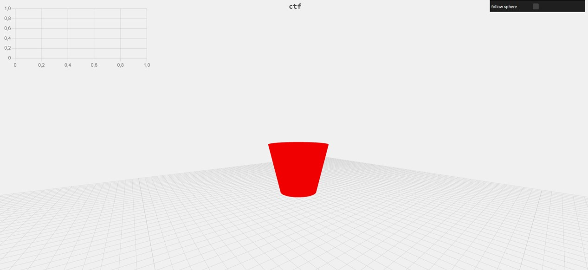
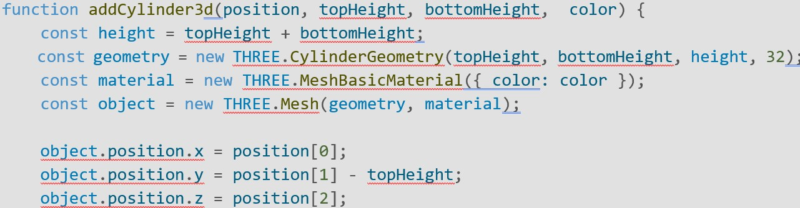

Le projet concerne le pilotage d'un convoyeur à l'aide d'un automate Siemens S7-1200, destiné à transférer des pièces jusqu'à l'espace de travail du robot, détectées par un capteur C1. La mise sous tension du système est assurée par un interrupteur S1, accompagné d'une signalisation H1. Le cycle de fonctionnement débute lorsque l'opérateur appuie sur le bouton de marche, maintenant ainsi le convoyeur en fonctionnement jusqu'à ce que le bouton d'arrêt soit actionné, signalé par le voyant H2. Le convoyeur s'arrête automatiquement lorsqu'un objet est détecté par le capteur C1 et redémarre une fois que l'objet n'est plus détecté. L'arrêt manuel du convoyeur peut être effectué via les boutons-poussoirs Ar et Aru, nécessitant une réactivation par le bouton Ma pour redémarrer. Le projet inclut également la réalisation du schéma de l'armoire électrique, la logique combinatoire, la programmation Ladder avec Tia Portal, le câblage de l'armoire, ainsi que des améliorations telles que le mode automatique/manuel et un compteur. Enfin, la programmation en Grafcet avec Zelio est également prévue.
1. L'objectif est de développer une bibliothèque d'objet en JavaScript qui permettra à l'utilisateur de créer des formes géométriques personnalisées :
2. Fonctionnalités :
3. Contraintes techniques :
4. Délais :
5. Maintenance et évolution :
Prenons un exemple qui est le cylindre parmis toute les figures. Dans la bibliothèque THREE.JS il y existe différentes figures déjà faite dont une qui est un cylindre mais comme écrit dans le cahier des charges on ne me demande pas un simple cylindre on me demande de faire un cylindre qui a pour but de pouvoir être modifier en « haut » et en « bas ». En effet le cylindre donner par THREE.JS a la possibilité d’être modifier en taille mais celui-ci est modifier en fonction de la taille écrite je m’explique. Lorsque nous donnons une taille à notre cylindre il divise cette somme et la met de chaque coter de l’endroit où le cylindre est placer donc la position initiale du cylindre. Mais dans mon cahier des charges on me demande de faire un cylindre avec une position mais je dois pouvoir changer le coter bas du cylindre et celui du haut sans devoir toucher la position. Donc voici le fonctionnement:
 Au cours des neuf semaines passées dans l'entreprise de Thales, j'ai acquis une expérience précieuse et des connaissances pratiques dans le domaine de la programmation. J'ai eu la chance de travailler sur plusieurs projets intéressants, en utilisant des technologies variées, ce qui m'a permis de renforcer mes compétences en programmation et de découvrir de nouvelles méthodes de travail. Au fil des semaines, j'ai appris à travailler en autonomie et à collaborer avec des collègues ayant des expériences et des compétences différentes des miennes. J'ai également été initié à l'utilisation d'outils tels que Git, ce qui a grandement facilité la gestion de projet. En outre, j'ai eu la chance de travailler avec des clients et de développer mes compétences en communication et en gestion de projet. Cela m'a permis de mieux comprendre les besoins des clients et de leur offrir des solutions adaptées. En somme, ce stage a été une expérience très enrichissante, tant sur le plan professionnel que personnel. J'ai acquis de nouvelles compétences, renforcé mes connaissances en programmation et en entreprise dans un environnement professionnel stimulant. Je suis reconnaissant envers Thales et les personnes avec lesquelles j'ai travaillé pour cette opportunité de stage enrichissante.